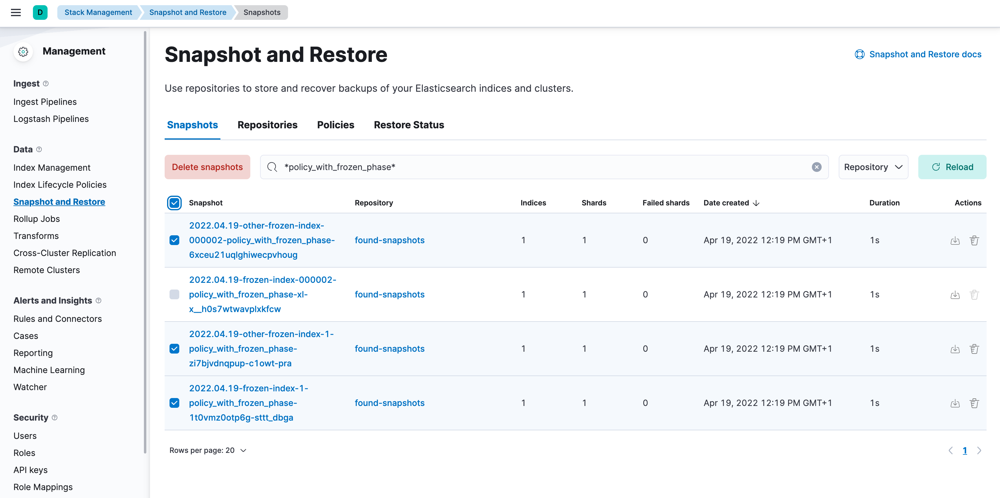

Searchable snapshot data tieredit
When data reaches the cold or frozen phases, it is automatically converted to a searchable snapshot by ILM.
If you do not intend to delete this data, you should manually restore each of the searchable snapshot indices to a regular index before disabling the data tier, by following these steps:
-
Stop ILM and check ILM status is
STOPPEDto prevent data from migrating to the phase you intend to disable while you are working through the next steps.# stop ILM POST _ilm/stop # check status GET _ilm/status
-
Capture a comprehensive list of index and searchable snapshot names.
-
The index name of the searchable snapshots may differ based on the data tier. If you intend to disable the cold tier, then perform the following request with the
restored-*prefix. If the frozen tier is the one to be disabled, use thepartial-*prefix.GET <searchable-snapshot-index-prefix>/_settings?filter_path=**.index.store.snapshot.snapshot_name
In the example we have a list of 4 indices, which need to be moved away from the frozen tier.

-
- (Optional) Save the list of index and snapshot names in a text file, so you can access it throughout the rest of the process.
-
Remove the aliases that were applied to searchable snapshots indices. Use the index prefix from step 2.
POST _aliases { "actions": [ { "remove": { "index": "<searchable-snapshot-index-prefix>-<index_name>", "alias": "<index_name>" } } ] }If you use data stream, you can skip this step.
In the example we are removing the alias for the
frozen-index-1index.
-
Restore indices from the searchable snapshots.
- Follow the steps to specify the data tier based allocation inclusion rules.
-
Remove the associated ILM policy (set it to
null). If you want to apply a different ILM policy, follow the steps to Switch lifecycle policies. -
If needed, specify the alias for rollover, otherwise set it to
null. -
Optionally, specify the desired number of replica shards.
POST _snapshot/found-snapshots/<searchable_snapshot_name>/_restore { "indices": "*", "index_settings": { "index.routing.allocation.include._tier_preference": "<data_tiers>", "number_of_replicas": X, "index.lifecycle.name": "<new-policy-name>", "index.lifecycle.rollover_alias": "<alias-for-rollover>" } }The
<searchable_snapshot_name>refers to the above-mentioned step: "Capture a comprehensive list of index and searchable snapshot names".In the example we are restoring
frozen-index-1from the snapshot infound-snapshots(default snapshot repository) and placing it in the warm tier.
- Repeat steps 4 and 5 until all snapshots are restored to regular indices.
-
Once all snapshots are restored, use
GET _cat/indices/<index-pattern>?v=trueto check that the restored indices aregreenand are correctly reflecting the expecteddocandstore.sizecounts.If you are using data stream, you may need to use
GET _data_stream/<data-stream-name>to get the list of the backing indices, and then specify them by usingGET _cat/indices/<backing-index-name>?v=trueto check. -
Once your data has completed restoration from searchable snapshots to the target data tier,
DELETEsearchable snapshot indices using the prefix from step 2.DELETE <searchable-snapshot-index-prefix>-<index_name>
-
Delete the searchable snapshots by following these steps:
-
Open Kibana and navigate to Management > Data > Snapshot and Restore > Snapshots (or go to
<kibana-endpoint>/app/management/data/snapshot_restore/snapshots) -
Search for
*<ilm-policy-name>* -
Bulk select the snapshots and delete them
In the example we are deleting the snapshots associated with the
policy_with_frozen_phase.
-
Open Kibana and navigate to Management > Data > Snapshot and Restore > Snapshots (or go to
-
Confirm that no shards remain on the data nodes you wish to remove using
GET _cat/allocation?v=true&s=node. - Edit your cluster from the console to disable the data tier.
-
Once the plan change completes, confirm that there are no remaining nodes associated with the disabled tier and that
GET _cluster/healthreportsgreen. If this is the case, re-enable ILM.POST _ilm/start